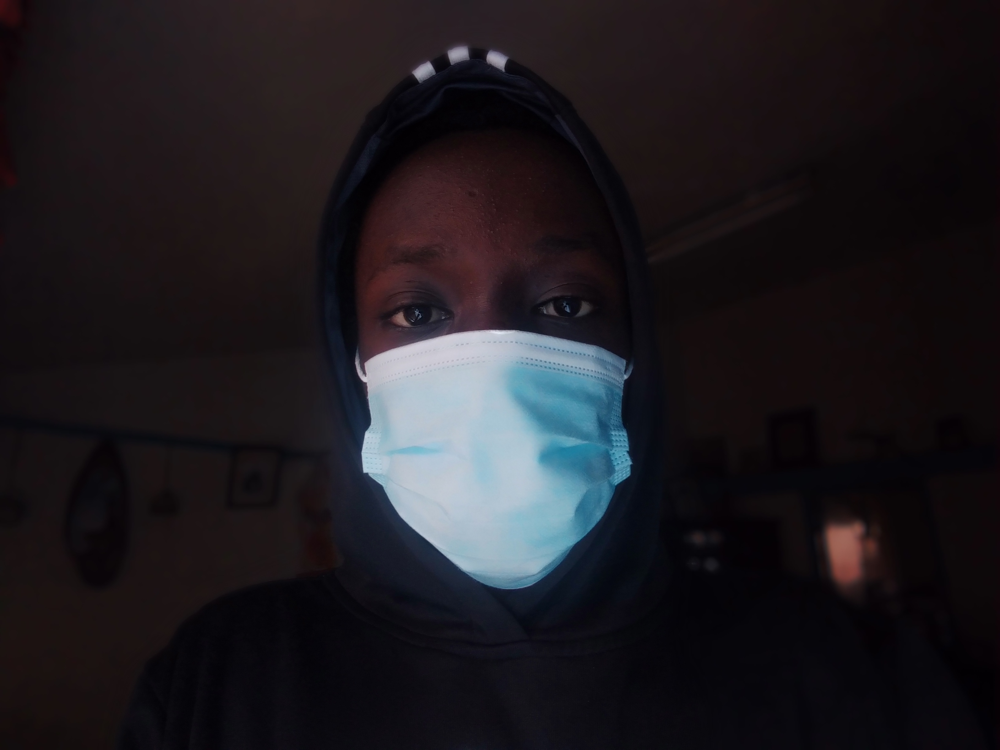

My name is Tom Luther.
Here are some of my projects:
A website talking about one of my favorite vacation spots. Uses HTML and CSS for styling.
A website showing my favorite pets, and a simple tutorial on how to take care of them.
A website showing a private island resort for a potential investor.
Click to view project.A website showing my most favorite restaurant to visit.
Click to view project.I studied at Chavakali High School in Chavakali, Vihiga County. Currently, I have no work experience whatsoever, that which I am hoping to fix very soon.
I decided to take a class on programming because it is a useful skill that is becoming more relevant as the years progress. Given the current pandemic, I perceived having programming skills would give me the upper hand in today's economy, and I saw Moringa School as a way to achieve my goal.
I am interested in politics, automobiles and programming mostly.
About The Site